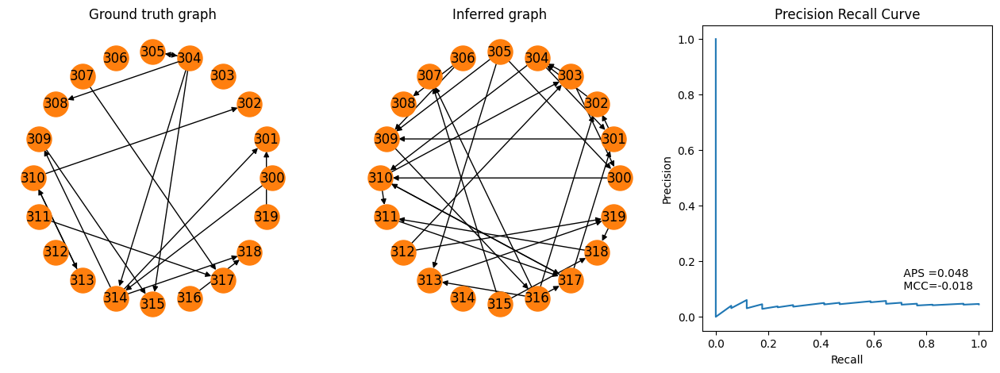

Create your own Connectivity method#
Here we explain quickly how one can incorparate custom algorithms in the spycon pipeline. To this end we implement a pretty dumb algorithm that draws random confidence scores and weights. It is just to showcase, what is needed.
Below we implement a class that inherits from SpikeConnectivityInference. In fact it is enough to implement the __init__ and _infer_connectivity methods.
[1]:
import numpy
from matplotlib import pyplot
from spycon.spycon_inference import SpikeConnectivityInference
class RandomConnectivityMethod(SpikeConnectivityInference):
def __init__(self, params:dict={}):
super().__init__(params)
self.method = "rand"
self.default_params = {"alpha": 0.9}
def _infer_connectivity(self, times: numpy.ndarray, ids: numpy.ndarray, pairs: numpy.ndarray, **kwargs) -> tuple:
alpha = kwargs.get("alpha", self.default_params["alpha"])
nodes = numpy.unique(ids)
stats = numpy.random.rand(len(pairs),1)
weights = numpy.random.randn(len(pairs))
stats = numpy.concatenate((pairs, stats), axis=1)
return nodes, weights, stats, alpha
Using cpu device
This algorithm can be then straightforwardly applied to a ConnectivityTest.
[2]:
from spycon import load_test
spycon_test = load_test(name='sim1917Cell1Block1_tiny', path='../data/gt_data/')
rand_con_method = RandomConnectivityMethod()
spycon_result, test_metrics = spycon_test.run_test(rand_con_method, only_metrics=False, parallel=False,)
fig = pyplot.figure(figsize=(16,5))
ax1 = fig.add_subplot(131)
spycon_test.draw_graph()
pyplot.title('Ground truth graph')
ax2 = fig.add_subplot(132)
spycon_result.draw_graph(graph_type='binary', ax=ax2)
pyplot.title('Inferred graph')
ax3 = fig.add_subplot(133)
recall, precision, aps, mcc = tuple(test_metrics[['prc_recall', 'prc_precision', 'aps', 'mcc']].to_numpy()[0])
pyplot.plot(recall, precision)
pyplot.text(.7,.1,f' APS ={aps:.3f} \n MCC={mcc:.3f}')
pyplot.xlabel('Recall')
pyplot.ylabel('Precision')
pyplot.title('Precision Recall Curve')
pyplot.show()

Of course, results are quite bad, because it is just a random result.
Remark: Normally, algorithms can be parallelized over pairs, or units. If this is possible one can implement with the _infer_connectivity_parallel method. Check out how this cna be done in the existing methods.